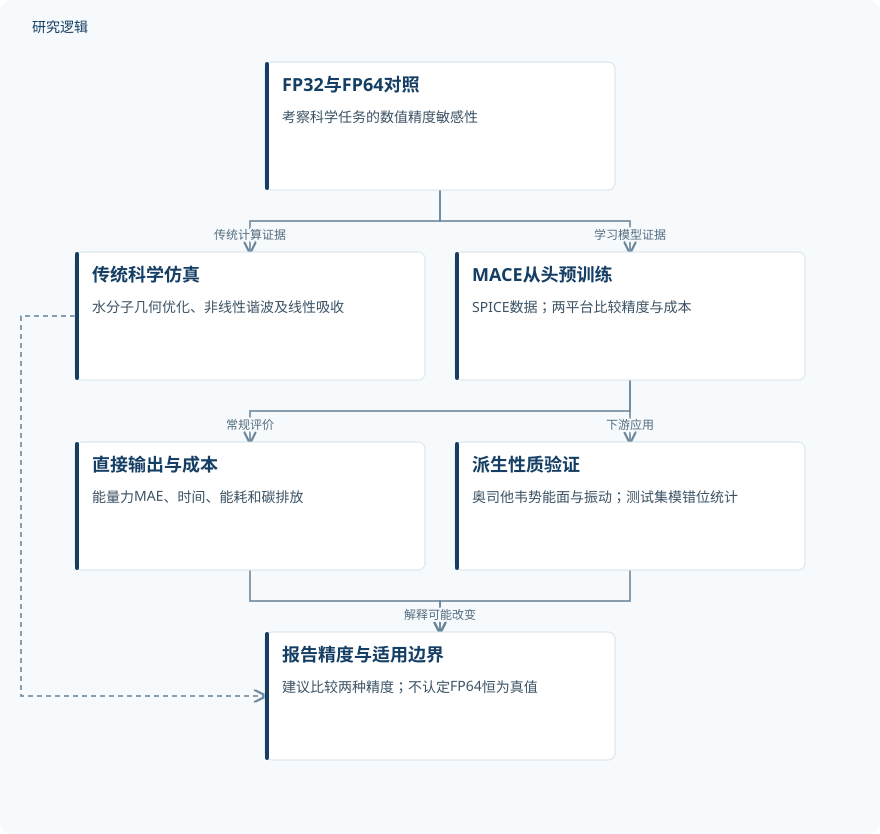

论文精读
立场论文：数值精度对科学机器学习的显著影响
Position: Significant impact of numerical precision in scientific machine learning
精读更新 2026-10-06 22:05 · 依据论文全文整理
科学机器学习的预测误差足够小，是否就能支持可靠的科学结论？这篇立场论文把容易被忽略的数值精度推到台前：FP32与FP64模型的能量、力误差可以接近，振动模指派却可能明显不同。作者结合量子化学、电磁仿真和机器学习势实验，主张将精度比较纳入报告规范。阅读价值不在于接受“全部改用双精度”，而在于理解哪些下游性质需要额外核验，以及如何衡量可靠性与计算成本。
文章目录
误差榜单相近，科学解释仍可能分叉
科学计算关注的不只是预测值，还包括平衡结构、谐波响应和谱峰对应的物理机制。有限位数表示、离散化与方程近似共同影响这些结果，微小扰动可能在后续求导或迭代中被放大。因此，科学机器学习不能仅沿用降低位宽以提高吞吐量的评价逻辑。
本文是立场论文，而非提出并验证一种新训练算法。其核心主张是明确报告数值格式，在适用任务上比较FP32与FP64，并鼓励公开FP64模型。高精度并非始终必要：作者同时提供精度不敏感案例，真正的问题是识别任务边界，而不是统一提高位宽。
从浮点格式追踪到结构与振动模
传统计算部分沿相同任务比较两种精度：PySCF 2.7.0用于水分子的HF与B3LYP几何优化，基组均为6-311++G(d,p)；Meep v1.29.0用于非线性电磁仿真。公式(1)–(3)从非线性极化连接到麦克斯韦方程，随后通过傅里叶变换提取透射谱。原文虽称介质为Kerr介质，实际扫描的是二阶极化率χ⁽²⁾，不能自行替换成三阶模型。
机器学习部分采用官方实现与SPICE数据，从头训练FP32和FP64的MACE-OFF23-medium，除精度与成本记录外保持原配置。随后用ASE和BFGS优化奥司他韦，力容差为0.005 eV/Å，并比较势能面及振动频率。该链路把直接预测的能量、力与派生性质分开，检验常规MAE是否遗漏科学应用中的敏感环节。
原研究：从精度对照到科学解释分歧


传统仿真与机器学习势是并行证据链；模错位统计显示精度间不一致，不提供正确性真值。
下载 SVG图示关系说明
实线表示相邻阶段的信息流，虚线表示跨阶段联系或反馈。
FP32与FP64对照 → 传统科学仿真：传统计算证据；FP32与FP64对照 → MACE从头预训练：学习模型证据；MACE从头预训练 → 直接输出与成本：常规评价；MACE从头预训练 → 派生性质验证：下游应用；传统科学仿真 → 报告精度与适用边界：工况依赖；直接输出与成本 → 报告精度与适用边界：成本权衡；派生性质验证 → 报告精度与适用边界：解释可能改变
单分子示例之外，还有近五万分子的统计
水分子与奥司他韦各提供一个明确描述的输入构型，均为计算研究，没有实物试件或新增测量谱。水分子FP64的HF与DFT均在三步内收敛，FP32均未收敛；奥司他韦所列振动模最大频差为8.352 cm⁻¹，不能以正文选出的5.18 cm⁻¹概括全表。其150个振动模不是150个独立样本，FP32和FP64分别出现5个、4个虚频模，成因仍未解释。
更大规模验证使用MACE-OFF23既有测试集：50,195个分子中49,804个成功计算，42,406个至少出现一次模错位。按1–10、11–20、21–50及至少51个原子分组，受影响比例分别为33.6%、65.4%、96.8%和100.0%。预训练另报告训练集、验证集与命名评估子集，但所给全文资料未报告这些集合的构型数量、划分比例、增强数量或多种子重复统计；也没有混合精度消融。
| 验证任务 | 样本与规模 | 主要结果 |
|---|---|---|
| 非线性介质FDTD透射谱与二阶响应精度对照 | 独立介质样本、仿真总数、重复次数、谱采样点数及增强数量未报告；参数扫描点不能视作独立试件。 | 正文称χ⁽²⁾低于10⁻⁶ m/V时FP32开始饱和，FP64维持至约10⁻⁸ m/V，下限至少改善两个数量级。 |
| MACE-OFF23-medium预训练精度与成本比较 | 训练、验证及各评估子集的独立分子数、构型数和增强数量未报告；重复运行数量与多种子统计未报告。 | H200验证能量MAE为0.9/0.8、力为19.4/19.1，顺序为FP32/FP64；H200时间106.8/134.9 hour、能耗62.02/88.66 kWh、排放26.70/38.18 kg；B200分别107.8/142.1、79.20/115.59、34.10/49.77。 |
| 奥司他韦势能面、结构优化与振动频率对照 | 一个分子输入构型，共150个振动模；模数量不是独立样本数，位移采样点及重复次数未报告。 | 较大位移处能量差达1 eV、力差达10 eV/Å；所列模54频差最大，为8.352 cm⁻¹；FP32/FP64分别有5/4个虚频模。 |
| MACE-OFF23测试集振动模错位统计 | 50,195个分子中49,804个成功计算；四个原子数组分别为3,824、10,882、34,784、314个。 | 42,406个分子受影响，占85.15%，每个受影响分子平均6.03次错位；四组比例为33.6%、65.4%、96.8%、100.0%。 |
展开数据来源、分组、对照与验证边界
非线性介质FDTD透射谱与二阶响应精度对照
数据来源。Meep v1.29.0生成仿真谱；折射率1.65，介质长度100 μm，中心波长1.55 μm；无实物测量。
分组与工况。FP32与FP64；χ⁽²⁾扫描范围10⁻¹²至10⁻²，图示10⁻⁸、10⁻⁶、10⁻⁴ m/V，并比较基频、SHG和THG。
数据划分。不涉及学习模型训练测试划分；本项为相同介质和激励条件下的数值仿真精度对照。
对照与消融。两种精度相互对照，以功率比随χ⁽²⁾二次变化的理论趋势作参考；网格收敛和非线性项消融未报告。
评价指标。透射功率W/m²、无量纲透射/入射功率比；以偏离二次趋势并饱和判断分辨率下限。
验证边界。网格分辨率、时间步长及场衰减停止阈值缺失；附录带宽0.15无单位，图注阈值方向与正文不一致。
MACE-OFF23-medium预训练精度与成本比较
数据来源。使用SPICE数据及MACE、MACE-OFF官方脚本；MACE 0.3.14、ASE 3.26.0、CodeCarbon 3.2.0。
分组与工况。单张H200或B200分别训练FP32、FP64；除精度与接入CodeCarbon外，超参数和随机种子保持原配置。
数据划分。报告训练集、验证集和多个命名评估子集；划分比例、各集合数量及独立测试集构造规则未报告。
对照与消融。同平台FP32为成本基线，与FP64比较；两平台环境不同，不能把跨平台差异单独归因于GPU。
评价指标。能量MAE为meV/atom，力MAE为meV/Å；时间hour、能耗kWh、CO₂排放kg。
验证边界。缺少重复统计及CodeCarbon测量边界；两平台CPU与运行环境不同，成本结论具有平台依赖性。
奥司他韦势能面、结构优化与振动频率对照
数据来源。初始三维结构来自PubChem；使用两种精度训练的MACE-OFF23-medium与ASE，经BFGS优化。
分组与工况。两模型分别优化至0.005 eV/Å力容差，再沿同一路径移动指定氧原子；振动表主要展示300–1800 cm⁻¹。
数据划分。复用预训练势模型，未另述本示例的数据划分；预训练数据划分数量与比例未报告。
对照与消融。FP32与FP64模型相互比较；没有实验谱或量子化学参考，也未报告训练、推理精度交叉消融。
评价指标。能量差eV、力差eV/Å、频率绝对差cm⁻¹和虚频模数量；这些差值不是相对真值的误差。
验证边界。缺少参考真值、振动计算细节和重复统计；不能判断哪种精度更准确，虚频成因和完整频谱差异未确定。
MACE-OFF23测试集振动模错位统计
数据来源。使用Kovács等的MACE-OFF23既有测试集；比较两种精度预测的振动频率匹配关系。
分组与工况。按1–10、11–20、21–50、至少51个原子分组比较FP32与FP64；分组总数对应成功计算分子。
数据划分。使用既有测试集；相应训练、验证数量和划分规则未报告，不能由测试分子数反推训练规模。
对照与消融。为FP64模寻找最近频率的FP32模，不把FP64视为真值；其他模型和匹配阈值消融未报告。
评价指标。错位要求i≠j且|f_i^FP64−f_j^FP32|<1 cm⁻¹；排除间隔在0.5 cm⁻¹以内的FP64近简并模。
验证边界。未成功计算分子的失败原因未报告；阈值敏感性和实测谱验证缺失，统计证明不一致而非实际错误率。
证据支持精度敏感，不等于证明FP64正确
H200验证集的FP32/FP64能量MAE为0.9/0.8 meV/atom、力MAE为19.4/19.1 meV/Å，但下游模指派仍显著变化。85.15%是成功计算分子中的精度间错位比例，不是实验谱错误率，没有外部真值就不能判定哪种指派正确。非线性FDTD中FP64将χ⁽²⁾可解析下限改善至少两个数量级，线性SiO₂案例却差异很小，进一步说明敏感性依赖工况。
代价也不是理论吞吐率的简单倒数：H200与B200上FP64训练时间分别增加至1.26倍和1.32倍，能耗至1.43倍和1.46倍。证据仍受重复统计、推理精度交叉控制及网格收敛缺失限制，附录未给FDTD空间分辨率和带宽单位；HF键角百分比及SiO₂误差数字也存在内部不一致。PINN部分主要转述既有研究，LLM部分主要讨论前瞻风险，不能与作者的MACE实验视为同等级证据。
从这篇论文走向下一项研究
以下为结合研究方向提出的候选方案，实验设计与预期目标有待验证。
面向结构PINN的曲率触发精度审计
问题与短板。本文尚未建立结构方程中的精度适用边界，也未分离优化停滞与模型容量不足。建议从梁弯曲代理求解切入，检验病态程度、训练阶段与派生应力误差之间的关系。
改进机制。以L-BFGS曲率和线搜索停滞作触发信号，仅在敏感阶段切换FP64，再用独立物理残差复核。已检索的曲率感知动态精度论文摘要包含Timoshenko梁验证，动态切换本身不是新技术。
候选创新。候选创新是把已有精度控制与结构设计目标审计结合：不只检测位移误差，还追踪应力峰值及设计排序变化。重点验证触发量能否预测工程决策风险，而非宣称新的通用控制器。
数据与实验设计。建议设计60组可解析或自行生成的梁参数工况，按细长比、载荷及刚度差异分层，40组开发、20组锁定测试。各配置建议配对运行5个种子；配点不计作独立结构，无须假定具备试验设备。
对照与消融。设置固定FP32、固定FP64、已有曲率控制及新增目标审计四组。消融曲率触发、残差复核和目标检查，另交叉比较优化器容差与网络宽度，避免把精度收益误认作架构收益。
成功判据。建议预注册成功条件：测试位移相对误差低于1%，应力误差低于5%，且设计排序与参考一致。只有同时满足门槛并减少相对全FP64的耗时，才认定取得有效成本收益。
风险与替代方案。曲率信号可能误报，切换也可能增加运行开销；单纯提高精度未必修复表达能力不足。若触发不稳定，改用固定FP64关键算子，并报告失败种子及架构调整后的独立效果。
材料逆向筛选中的振动模稳健性约束
问题与短板。本文显示模指派不一致，却缺少外部频率真值和训练、推理精度交叉对照。建议面向材料单元候选筛选，研究数值扰动是否改变稳定性判断与候选排名，而不是继续累积两模型差值。
改进机制。在能量与力评价之外增加Hessian谱、虚频和模态子空间一致性检查，对敏感候选执行高精度参考计算。双空间监督研究摘要提示派生性质损失值得关注，但不能据此认定它已解决浮点问题。
候选创新。候选创新是将精度扰动下的模态稳定性作为逆向筛选约束，区分频率接近、模序交换和真实位移模式改变。派生性质监督与精度审计均有既有基础，新增组合须经独立验证。
数据与实验设计。建议从公开SPICE结构中筛选120个分子作方法验证，再另行采集目标材料单元计算数据。建议80个开发、40个锁定测试，按分子身份隔离；每个对象增加平衡附近扰动，但不增加独立样本数。
对照与消融。采用训练FP32/FP64与推理FP32/FP64交叉四组，建议各3个配对种子。比较能量力监督、增加派生性质监督和新增筛选约束，并消融近简并阈值、位移步长与结构优化容差。
成功判据。以独立高精度计算为参考，预先规定频率容差、虚频判定及模态子空间一致性阈值。成功需在锁定测试上降低误筛率且保持候选质量，同时报告参考计算成本，不能仅用模型间一致性判胜。
风险与替代方案。电子结构近似误差可能大于舍入误差，近简并模也会削弱逐模匹配可靠性。若单模标签不稳，改用子空间比较；若参考成本过高，先复核高风险候选，再讨论向材料设计迁移。
拟议路线：结构PINN的按需精度与目标审计

对应第一条研究建议；样本规模、精度触发和成功门槛均为拟议设计，不是论文实测结果。
下载 SVG图示关系说明
实线表示相邻阶段的信息流，虚线表示跨阶段联系或反馈。
梁工况与参考解 → 配对精度与架构对照：固定数据条件；配对精度与架构对照 → 曲率与停滞检测：记录优化动态；曲率与停滞检测 → 按需切换FP64：敏感阶段触发；按需切换FP64 → 应力与设计排序审计：核验工程目标；应力与设计排序审计 → 曲率与停滞检测：开发集反馈；应力与设计排序审计 → 锁定测试与成本判据：冻结方案后评估；配对精度与架构对照 → 锁定测试与成本判据：基线与消融比较